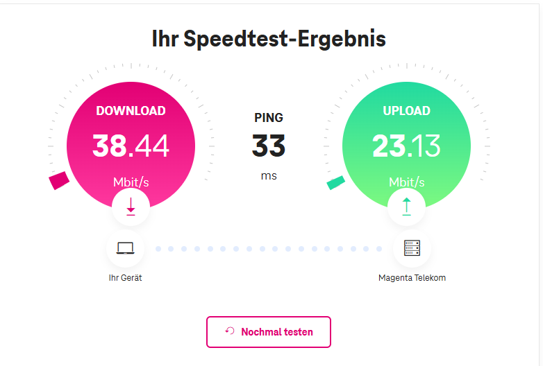
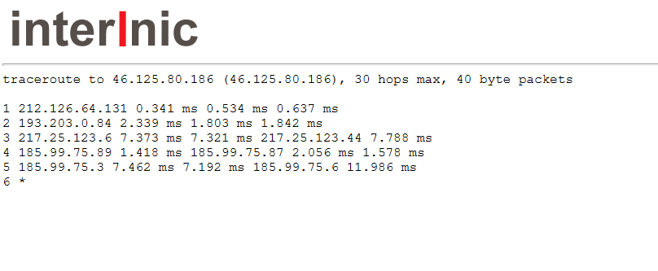
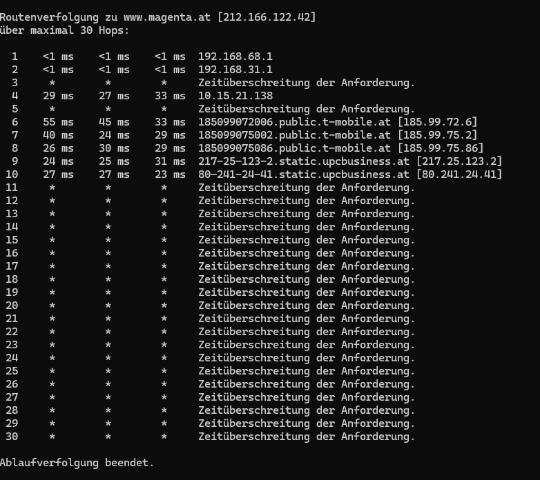
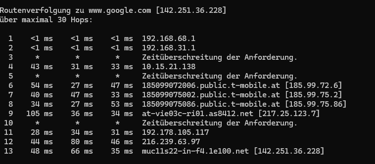
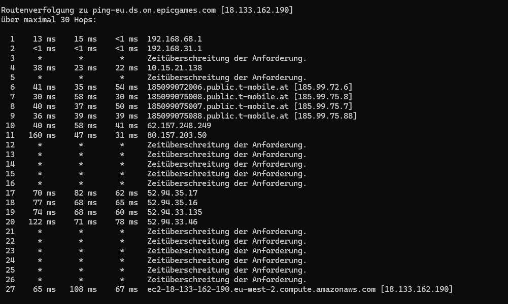
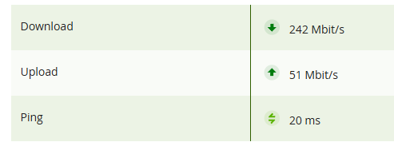

{kind=link}

LG. JD. 🙂
Guten Abend,
ich habe einen 5G "m" Tarif. Denke 250 MBit wären das - so sicher bin ich mir nicht.
Seit ungefähr 4 Wochen habe ich massive Probleme.
Ich bzw. mein Sohn spielen leidenschaftlich gerne Fortnite und andere Games.
Was vorher nahezu problemlos ging ist nun ein Spielen nach Glück.
Der Ping wandert zwischen 40 und 400 (!) Packetloss sage und schreibe 20%
Der Speedtest auf Magenta gibt mir folgende Werte:
38,44 Mbit download - 23,13 MBit upload - Ping 33 ms
Recht flott was?
😉
Da ich am System nichts geändert habe:
Magenta Router als Bridge -> Dahinter folgt ein Mesh Netzwerk und in jedem Zimmer LAN Dosen. kann ich hier einen Fehler ausschließen.
Da ich aber es genau wissen wollte habe ich auch einen Test gemacht mit meinem Firmenlaptop - also direkt auf den Magenta Huawei Router mit LAN Kabel - Ergebnis: das selbe.
Was sagen die Werte im Router?
Name: Magenta-T-(Roaming deaktiviert)
Verbindungstyp: 5G NSA
Band: B3+B7+B1+B8+n28
Signalstärke: Stark
Mittlerweile habe ich alle APN durch die ich finden konnte:
homenet
internet.t-mobile.at
business.gprsinternet
Fazit: Keine Hilfe
😄
Auch habe ich das Teil schon mehrmals neu gestartet - was aber nur Zeitverschwendung ist.
Im Anhang mal paar Screenshots:

Hier der Traceroute Test von globedom:

Ob da bei der nummer 6 jemals was gekommen wäre kann ich nach 5 Minuten anstarren während der Browser lädt nicht sagen ...
Irgendwelche Ideen seitens der Communty was ich noch machen könnte?
Ah mein ungefährer Standort ist:
1210 - Frohes Schaffen Weg 5
Da ich das Haus aber nicht wegbewegt habe - wirds daran wohl auch nicht liegen.
Guten Abend,
hier noch ein traceroute Test direkt über meinen Rechner:
einmal mit dem Ziel www.magenta.at

Und dann versuchen wir noch www.google.com:

Und zu guter letzt nehmen wir noch den Europäischen Fortnite Server:

Wie erkennbar ist es absolut nicht möglich annähernd mit Spass zu spielen
🙂
Falls du gerade Probleme mit deiner Internetverbindung hast, habe ich einen super Tipp für dich! 😊 Melde dich direkt bei unserem Technikteam unter 0676 200 7777.
Dort können unsere Technikerinnen und Techniker deinen Anschluss ganz genau unter die Lupe nehmen.
Das hier ist ein Forum, wo sich Nutzer gegenseitig unterstützen, also bitte nicht als Beschwerdestelle verstehen. Sei aber versichert, wir möchten, dass du die beste Hilfe bekommst!
Liebe Grüße, JD. 🙂
Am 29.10.2024 um 07:41 schrieb Jonathan Dorian:
Falls du gerade Probleme mit deiner Internetverbindung hast, habe ich einen super Tipp für dich! 😊 Melde dich direkt bei unserem Technikteam unter 0676 200 7777.
Dort können unsere Technikerinnen und Techniker deinen Anschluss ganz genau unter die Lupe nehmen.
Das hier ist ein Forum, wo sich Nutzer gegenseitig unterstützen, also bitte nicht als Beschwerdestelle verstehen. Sei aber versichert, wir möchten, dass du die beste Hilfe bekommst!
Liebe Grüße, JD. 🙂
Guten Abend,
das weiß ich
🙂
Und auch habe ich das Technik Team bereits kontaktiert, und direkt den Link zu dem Thema geschickt. Dadurch waren alle Screenshots Tests und meine Geschichte ersichtlich
😉
Glaube von der Technik waren sie dadurch auch zufrieden
🙂
LG
Hallo, gibt es hier schon eine Lösung?
Ich habe das 600er Paket mit der 5G Outdoor Box. Seit einigen Wochen geht es mir gleich wie den anderen hier. Ständig Ping Ausbrüche (zum Teil im Spiel bis auf 3000+) aber beim speedtest zwischen 400 und 600 mbit.
Ich spiele GuildWars2 und das ist teilweise unspielbar geworden. BF2042 läuft einiger maßen. Mein Bruder spielt über Glasfaser und hat keine Probleme.
Hatte vorher die 250er 5G Indoor Variante, vor 4 Monaten plötzlich immer wieder abbrüche von 5G auf LTE. Nach dem Gespräch mit dem Support meinte dieser ich sollte auf die Outdoor Variante wechseln.
Gesagt, getan. Seit 6 Wochen habe ich jetzt die Outdoor Variante und es ist heute gut, morgen schlecht. 2 mal mit dem Support telefoniert und alle Varianten die man im Forum Vorschlägt probiert. Keine Besserung.
Ich hoffe es gibt da mal eine Lösung.
Das ist doch wie jedes Jahr der Klassiker.
Aus meiner Sicht eine Überlastung im Mobilfunknetz. Das kommt jedes Jahr im Oktober oder November und dauert bis zum Frühling.
Da kann man die Technik beim Kunden meist ausschließen. Hab das selbst übe rmeinen 4G Magenta Router gestern bemerkt.
Es nutzen einfach zuviele Kunden das mobile Internet im 4 oder 5G Bereich.
Am 5.11.2024 um 08:29 schrieb Christian_E:Das ist doch wie jedes Jahr der Klassiker.
Aus meiner Sicht eine Überlastung im Mobilfunknetz. Das kommt jedes Jahr im Oktober oder November und dauert bis zum Frühling.
Da kann man die Technik beim Kunden meist ausschließen. Hab das selbst übe rmeinen 4G Magenta Router gestern bemerkt.
Es nutzen einfach zuviele Kunden das mobile Internet im 4 oder 5G Bereich.
Ich muss hier auch positives berichten - das passiert eh selten bis gar nicht.
Also nach einer weiteren Woche inkl. Modem verstellen ging es noch immer nicht.
Im Chat wurde mir sofort angeboten die aktuelle 5G Outdoor Aktion zu nehmen da dies an meinem Standort ganz sicher besser ist.
Wenn es klappt kündigen sie mir meinen jetzigen Tarif ohne Kosten (habe ich im April verlängert).
Also ... zugeschlagen (6 Monate keine GGB - 600 Mbit)
Paket kam an - hab mich nicht viel damit gespielt - empfang eher schwach - ABER: Konstant schwach ... sprich: 200 Mbit und 30 - 40 ms Ping.
War nicht optimal aber eben besser.
Also habe ich mich auf die Suche gemacht nach den "perfekten" Standort: Dort zwar auch nur "schwacher" Empfang. Dort habe ich das Teil montiert da es für mich klar war das ich es behalten werde.
Und siehe da:

Den Test habe ich gemacht zu einer Uhrzeit wo:
Frau 4K Serien schaut
Kind gerade den Fortnite Download macht
Ich in 4K etwas auf Youtube schaue. Und alle Kinder in Wien daheim sind aufgrund des schulautonomen Tages.
Also was schon ziemlich viel ist...
Ich erreiche sogar sehr oft knappe 520 mbit (!) - was für mich ein riesen Schritt bedeutet. Downloads waren noch nie so spaßig.

Wieso in meinem Fall plötzlich der Empfang im Haus so schlecht war weiß ich nicht, auch weiß ich nun das die Daten die der Huawei Router angezeigt hat (Super Empfang) der absolute blödsinn ist.
Ich finde die Outdoor Box übrigens ohne der indoor Box - da ich dahinter mit dem System von TP-Link "Deco" arbeite (inkl. Switch im Technikraum) und mein Haus in jedem Raum LAN Dosen hat.